- REFERENCE-тип атрибута
– cпециальный тип атрибутов узла дерева требований, позволяющий связывать узел,
для которого он указан, с другим узлом из того же каталога проекта Requality. Этот атрибут находится в окне
'Properties'
на вкладке 'Main' в таблице 'Attributes'. Это обычный атрибут, у которого указан тип 'REFERENCE',
а в качестве значения указан целевой узел, на который идет ссылка.
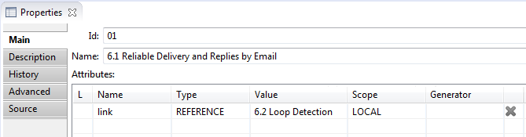
Имя этого атрибута является именем ссылки.
Связанность узлов можно посмотреть в представлении 'Requality Links Explorer'.
Ссылки в этом представлении доступны в обе стороны, как у узла, в котором была создана такая ссылка:
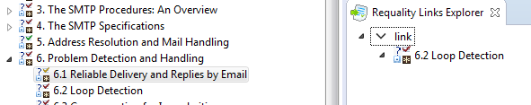
так и для узла, к которому она была привязана (на который она ссылается):
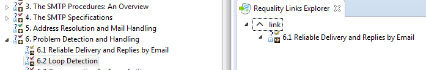
- Requality Explorer
– окно в перспективе Requality, отображающее все содержимое проекта Requality
(документы, требования, отчеты, комментарии).

- Requality Links Explorer
– окно в перспективе Requality, в котором отображаются узлы каталога проекта Requality, связанные с выбранным узлом связью-ссылкой, указанной в атрибуте типа 'REFERENCE'. В этом окне можно просматривать вместе и по отдельности как исходящие,
так и входящие ссылки, сортировать их отображение по именам и включать подсветку связанных ссылкой узлов в окне
'Requality Explorer'.
- Review
– окно в перспективе Requality, визуальный редактор для
требований, тестовых ситуаций, текстовых узлов и комментариев. Предназначен скорее для просмотра, нежели для редактирования, поэтому обладает
ограниченной функциональностью. Позволяет только добавлять, редактировать и удалять комментарии, а также изменять статусы требований
и тестовых ситуаций. В отличие от 'UniEditor' позволяет устанавливать статусы требований и тестовых ситуаций в значение 'verified'.
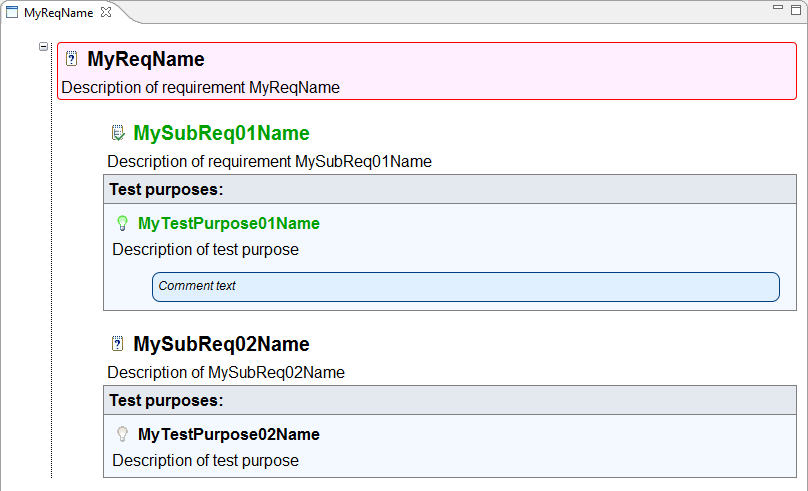
- Автогенерируемый идентификатор узла (SeqID)
– это уникальный в рамках проекта идентификатор узла дерева требований. Является атрибутом узла дерева требований (требования, текстового узла, комментария и т.д.)
и представляет собой число. В некоторых случаях это число может иметь определяемый пользователем префикс, но по умолчанию его нет. Имя атрибута, содержащего
'SeqID', может быть задано пользователем, по умолчанию это 'ForeignID'. Уникальность идентификатора заключается в том,
что в проекте на протяжении всего его жизненного цикла только один узел дерева требований может иметь такой идентификатор, и, даже если данный узел будет удален,
пока механизм включен никакой другой узел не получит такой же идентификатор. Чтобы механизм поддержки автогенерируемых идентификаторов в проекте
Requality работал и их уникальность отслеживалась, он должен быть включен в настройках проекта (по умолчанию при создании нового проекта механизм не включен).
В противном случае такие атрибуты считаются обычными рядовыми атрибутами
узла, и уникальность их значений не соблюдается. При включении механизма автогенерируемых идентификаторов все узлы дерева требований, которые уже были в проекте,
получают атрибут с указанным именем и уникальным значением. Если у каких-то узлов атрибут с таким именем уже был, он учитывается как 'SeqID',
и его значение будет зарезервировано за данным узлом. Все новые узлы будут получать данный атрибут с автоматически задаваемым значением.
После отключения механизма автогенерируемых идентификаторов, все эти атрибуты будут удалены.
- Активный шаблон узла (активный шаблон)
- 'шаблон узла', который выбран в качестве активного для данного типа узлов. Если шаблон выбран в качестве активного,
то при создании новых узлов данного типа все узлы будут создаваться по этому шаблону по умолчанию. Изначально для всех узлов проекта выбран пустой шаблон,
где все параметры заданы по умолчанию. (Cм. Редактор шаблонов.)
Для одного типа узлов активный шаблон может быть только один. Активный шаблон выделяется жирным шрифтом в списке шаблонов в окне редактора шаблонов.
- Обязательные атрибуты
– это атрибуты, которые в соответствии с настройками проекта Requality автоматически указываются для уже существующих и для вновь создаваемых элементов дерева требований.
Для разных типов узлов обязательные атрибуты могут быть разные. Обязательными являются все системные атрибуты.
В соответствии с настройками обязательными атрибутами могут стать пользовательские атрибуты.
- Отчет (Report)
– некоторая сущность, представляющая собой готовый сгенерированный отчет.
Отчет генерируется на основе настроек, указанных в узле 'Настройки отчета' (см. Настройки отчета (Report settings)), перегенерирован быть не может. Обладает нередактируемым набором параметров, позволяющих узнать, по каким настройкам был сгенерирован данный отчет. Изменить можно только имя отчета. По умолчанию имя отчета содержит информацию о дате и времени генерации.
Отчет может состоять из нескольких отчетов, если он сгенерирован для нескольких связанных ссылками проектов сразу. В таком случае в его верхней части будет располагаться строка с перечнем ссылок для этих проектов. При клике на такую ссылку в этом же окне будет открыт отчет для соответствующего проекта.
Каждый отчет в начале содержит сводную таблицу с краткой информацией о себе. Она включает такие данные, как дата и время генерации, версия инструмента на момент генерации отчета, имя инициатора генерации (как оно указано в настройках операционной системы), а также указание на репозиторий, если проект находится под версионным управлением.
- Отчет по шаблону 'Анализ покрытия требований'
- отчет о покрытии требований и тестовых ситуаций другими
элементами (например, тестами), заданном с помощью дополнительного
источника информации о покрытии. Таких источников может быть два:
- Файл с информацией о покрытии, записанной в определенном формате
- Автоматический поиск файлов, содержащих идентификаторы покрытых ими
требований или тестовых ситуаций.
При использовании этого источника происходит поиск по выбранным
пользователем проектам в workspace на предмет обнаружения файлов с
заданным расширением. Расширение задается пользователем. Для указанных
файлов производится построчная проверка содержимого файла на
соответствие регулярному выражению, описанному пользователем. В
результате такого поиска инструмент получает набор покрытых элементов и
информацию о покрывающих файлах.
- Отчет по шаблону 'Анализ покрытия выделенных требований'
– отчет о покрытии выделенных фрагментов документа другими
элементами (например, тестами), заданный с помощью дополнительного
источника информации о покрытии. Таких источников может быть два:
- Файл с информацией о покрытии, записанной в определенном формате
- Автоматический поиск файлов, содержащих идентификаторы покрытых ими
требований или тестовых ситуаций
При использовании этого источника происходит поиск по выбранным
пользователем проектам в workspace на предмет обнаружения файлов с
заданным расширением. Расширение задается пользователем. Для указанных
файлов производится построчная проверка содержимого файла на
соответствие регулярному выражению, описанному пользователем. В
результате такого поиска инструмент получает набор покрытых элементов и
информацию о покрывающих файлах.
- Отчет по шаблону 'Настраиваемая визуализация связей между требованиями' (экспериментальная функциональность)
– отчет со ссылками между связанными узлами каталога проекта Requality.
Отчет состоит из двух страниц. Первая содержит информацию о прямых ссылках, вторая об обратных.
По умолчанию открывается первая страница, для перехода на вторую следует нажать на ссылку с
именем обратного отношения (задается в свойствах проекта). Для обратного перехода к первой странице следует нажать на имя отношения.
- Отчет по шаблону 'Проверка правил оформления'
- отчет в виде таблицы, содержащей перечень узлов, в которых нарушены правила 'Checker rules',
и информацию о том, какие именно правила нарушены в каждом таком узле.
- Отчет по шаблону 'Прогресс по проекту'
– отчет со статистикой по разным ревизиям, загруженным в репозиторий.
Отчет состоит из двух страниц:
- На первой странице находятся следующие графики:
- График, отображающий общее количество элементов: требований (внутренних и листовых узлов), тестовых ситуаций.
- График с информацией о покрытии.
- И график с соотношением количества требований и количества тестовых ситуаций.
- На второй странице отчета отображается общая таблица с числовыми характеристиками по ревизиям:
количество требований, тестовых ситуаций, количество и процентное соотношение покрытых и не покрытых требований.
Для построения данного отчета можно установить настройки отчета (интересующий период времени и временной шаг между ревизиями), а также указать источник, откуда необходимо брать информацию о покрытии.
- Параметры виртуального узла
– свойства виртуального узла, которые указываются в окне 'Properties'. (Также могут быть в сокращенном виде
просмотрены и отредактированы в 'окне редактирования параметров'.)
Для виртуальных узлов окно 'Properties' содержит 4 вкладки:
- Вкладка Main содержит следующие параметры виртуального узла:
- Id – идентификатор виртуального узла. Идентификатор уникален среди дочерних узлов одного родителя. Может быть изменен вручную.
- Name – имя виртуального узла. Может не быть уникальным. По умолчанию пусто. Может быть изменено вручную.
- Attributes – атрибуты виртуального узла, представлены в таблице. Подробнее о таблице атрибутов
здесь.
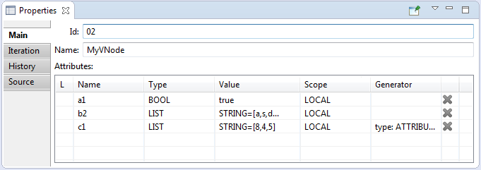
- Вкладка Iteration содержит следующие параметры виртуального узла:
- Target – целевой элемент,
которым будет оперировать виртуальный узел. Требование или тестовая ситуация.
По умолчанию не указан. Может быть выбран среди узлов каталога проекта.
Если у требования-родителя виртуального узла есть дочерняя тестовая ситуация,
то в качестве 'Target' может быть выбрана только тестовая ситуация (не требование).
- Iteration method –
способ использования виртуального узла. Может иметь два значения, выбираемые из выпадающего списка:
- Reuse - использование обобщенного описания, копии которого будут добавлены к виртуальному узлу.
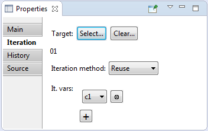
- Base element- определение базового элемента, при котором копии прямых потомков целевого элемента будут добавлены к виртуальному узлу.
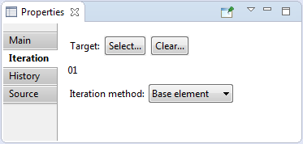
- It.vars – итерируемые переменные.
Этот параметр появляется только в том случае, если выбран способ 'Reuse'.
По умолчанию ни одна итерируемая переменная не указана. Итерируемых переменных может быть несколько.
Они могут быть добавлены и удалены с помощью соответствующих кнопок.
Выбираются с помощью выпадающего списка, который содержит
список доступных атрибутов. В качестве итерируемой переменной может
быть использован один из атрибутов данного
виртуального узла (т.е. находящийся в списке атрибутов на вкладке 'Main'),
имеющий тип List (то есть имеющий список значений).
- Вкладка History содержит информацию об истории всех ревизий,
касающихся виртуального узла. Содержимое вкладки аналогично содержимому вкладки 'History' у
требования (см. Параметры требования).
- Вкладка Source содержит только json-код:
- json – низкоуровневое
представление виртуального узла как
сущности. Не редактируется.
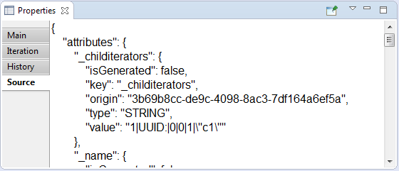
- Параметры Комментария
– свойства узла Комментарий, которые указываются в окне 'Properties'. (Также могут быть в сокращенном виде
просмотрены и отредактированы в 'окне редактирования параметров'.)
Для Комментария окно 'Properties' содержит 3 вкладки:
- Вкладка Main содержит следующие параметры комментария:
- Id – идентификатор комментария. Идентификатор уникален среди дочерних узлов одного родителя. Не редактируется.
- Name – имя комментария. Может не быть уникальным. По умолчанию пусто. Может быть изменено вручную.
- Author – автор комментария. По умолчанию это поле заполнено в соответствии с настройками операционной системы.
- Поле для текста комментария – по умолчанию пусто. Может быть заполнено вручную.
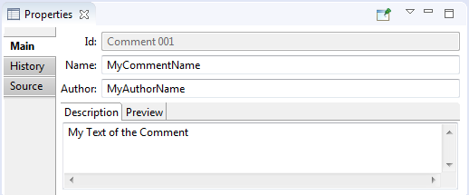
- Вкладка History содержит информацию об истории всех ревизий, касающихся этого комментария.
Содержимое вкладки аналогично содержимому вкладки 'History' у требования (см. Параметры требования).
- Вкладка Source содержит только json-код:
- json – низкоуровневое
представление комментария как
сущности. Не редактируется.
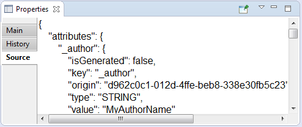
- Параметры Настроек отчета
– свойства узла 'Настройки отчета', которые указываются в окне 'Properties'. (Также могут быть в сокращенном виде
просмотрены и отредактированы в 'окне редактирования параметров'.)
Для Настроек отчета окно 'Properties' содержит 3 вкладки:
- Вкладка Report Settings:
- Id – идентификатор Настроек отчета. Идентификатор уникален
среди узлов одной папки в разделе Отчетов. Может быть изменен
вручную.
- Root requirement – требование, для
которого будет генерироваться отчет. В отчете, сгенерированном на основе этих Настроек отчета,
будет рассматриваться не все дерево узлов проекта, а только поддерево указанного узла-требования и все его дочерние узлы (требования и комментарии).
В случае подключения дополнительных плагинов к Requality в отчет могут войти и узлы других типов.
Эта настройка изменяется вручную.
- Template – шаблон отчета, в соответствии с которым модифицируется
вид и содержимое отчета. Шаблон отчета изменяется вручную: выбирается из списка
доступных шаблонов отчета. Является системным атрибутом. По умолчанию доступны следущие шаблоны отчета:
- Отчёты для решения типовых задач
- 'Чтение требований' - для выгрузки всех требований и текстовых узлов в виде таблицы.
- 'Проверка правил оформления' - отчет, содержащий информацию о нарушений правил оформления требований,
в том числе тех, что описаны в настройках 'Checker rules'.
- 'Анализ покрытия требований' - содержит информацию о покрытии требований и тестовых ситуаций другими элементами (например, тестами).
Для генерации требуется задать источник информации о покрытии. Подробнее об отчете 'Анализ покрытия требований' можно прочитать здесь.
- Экспорт
- 'Экспорт проекта в XML' - экспорт проекта Requality в виде xml-документа, предназначен для использования отчета другими инструментами.
ЭКСПЕРИМЕНТАЛЬНЫЕ
- Выделение требований
- 'Анализ выделения требований' (экспериментальная функциональность) - этот отчет выгружает все доступные
документы и разметку для них,
предназначен для анализа выделения требований в импортированных документах.
- 'Анализ покрытия выделенных требований' (экспериментальная функциональность) аналогичен шаблону
'Анализ покрытия требований',
но предоставляет информацию о покрытии фрагментов документа.
- Анализ связей между требованиями
- 'Настраиваемая визуализация связей между требованиями' (экспериментальная функциональность) - отчет со ссылками между связанными узлами каталога проекта Requality.
Предназначен для просмотра связей в соответствии с заданными настройками.
- 'Двунаправленная визуализация связей' (экспериментальная функциональность) - этот отчет предназвачен для просмотра связей в двух направлениях (исходящих и входящих) одновременно.
- Отладка правил оформления
- 'Отладка правил оформления' (экспериментальная функциональность) - этот отчет предназначен для отладки правил оформления требований,
он позволяет изучить узлы, на которых правила, записанные для проекта, выдают результат, отличный от 'true' или 'false',
то есть могут быть записаны некорректно.
- Остальное
- 'Экспорт в LORequality' (экспериментальная функциональность) - этот отчет предназначен для обмена требованиями с LibreOffice.
- 'Прогресс по проекту' (экспериментальная функциональность) - этот отчет предназначен для анализа изменения количества требований и тестовых ситуаций
на основе истории коммитов, позволяет просматривать статистику по количеству требований и тестовых ситуаций в разных ревизиях,
загруженных в репозиторий по данному проекту.
- Attributes – атрибуты настроек отчета, представлены в таблице.
Подробнее о таблице атрибутов здесь. Если для
генерации отчета требуется указать источник информации об отчете, то информация
о нем записывается в таблицу атрибутов как значение атрибута с именем coverageFilePath.
Для задания или изменения значения этого атрибута используется кнопка
'Update Coverage Source', которая возникает на вкладке в том случае,
если выбранный шаблон отчета требует указания источника информации о покрытии.
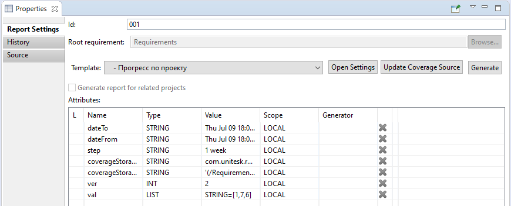
- Вкладка History содержит информацию об истории всех ревизий, касающихся этого узла Настроек отчета.
Содержимое вкладки аналогично содержимому вкладки 'History' у требования
(см. Параметры требования).
- Вкладка Source содержит только json-код:
- json – низкоуровневое
представление отчета как сущности. Не
редактируется.
- Параметры отчета
– параметры узла Настройки отчета, на основе которых отчет был сгенерирован. Указываются в окне
'Properties'.
Полностью идентичны параметрам узла Свойства отчета (за исключением атрибута 'date'), однако не могут быть отредактированы (за исключением параметра 'Id').
- Параметр Id в данном случае - это идентификатор отчета,
располагающийся на вкладке 'Report Settings' окна 'Properties'. По умолчанию он включает идентификатор
'Настроек отчета', на основе которых был сгенерирован данный отчет, и дату и время генерации. Однако может быть вручную отредактирован пользователем.
- Таблица атрибутов содержит атрибут date, который автоматически создается при генерации отчета и содержит информацию о дате и времени генерации отчета.
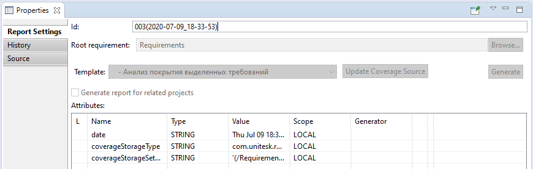
- Параметры проекта Requality (свойства проекта)
– свойства проекта Requality, задаются как параметры корневого узла проекта.
Устанавливаются в окне 'Properties'.
Для проекта окно 'Properties' содержит 3 вкладки:
- Вкладка 'Main'
- Кнопка 'Extract enum definitions from attributes' открывает диалоговое окно для извлечения перечисляемого
типа из уже существующих атрибутов проекта. См. подробнее Перечисляемый тип атрибута (Enum).
- 'Attributes' - атрибуты проекта, представлены в таблице. Таблица атрибутов (см. Таблица атрибутов) проекта аналогична таблицам
атрибутов других узлов проекта, за исключением того, что отсутствует столбец 'Scope'. Все атрибуты проекта считаются
по умолчанию глобальными, то есть наследуются всем деревом
проекта. В таблице атрибутов проекта могут быть заданы атрибуты типа 'ENUM_DEFINITION',
которые служат для задания перечисляемого типа для использования в других атрибутах проекта. Подробнее о перечисляемом типе см. Перечисляемый тип атрибута (Enum).
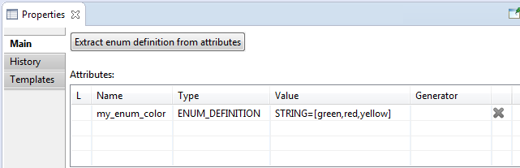
- Вкладка History содержит информацию об истории всех ревизий в проекте.
На этой вкладке расположена таблица истории изменений — это таблица, содержащая информацию о всех ревизиях
элементов дерева требований проекта, которые были сохранены в репозиторий с использованием меню 'Repository'.
Каждому сохранению изменений в репозиторий соответствует одна строка:
- в первой ячейке указан текст комментария к этому изменению,
- во второй ячейке - системный номер версии (для обычного пользователя эта информация несущественна),
- в третьей ячейке - имя загрузившего версию в репозиторий пользователя,
- в четвертой - дата загрузки версии в репозиторий.
При двойном клике по строке определенного изменения открывается перспектива для сравнения состояния проекта на тот момент с его текущим локальным состоянием.
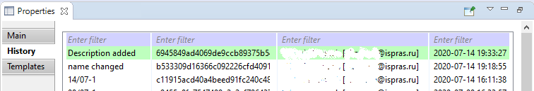
- Вкладка 'Templates' - содержимое этой вкладки полностью совпадает с содержимым окна 'Редактора шаблонов' и имеет ту же функциональность.
См. Редактор шаблонов.
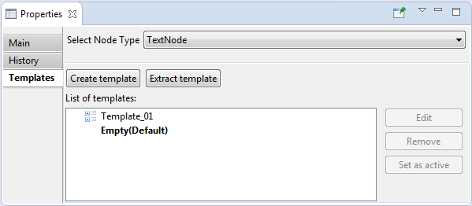
- Параметры текстового узла
– свойства текстового узла, которые устанавливаются в окне 'Properties'. (Также могут быть в сокращенном виде
просмотрены и отредактированы в 'окне редактирования параметров'.)
Для текстовых узлов окно 'Properties' содержит 5 вкладок:
- Вкладка Main содержит следующие параметры текстового узла:
- Id – идентификатор
текстового узла. Идентификатор уникален
среди дочерних узлов одного родителя. Может
быть изменен вручную.
- Name – имя текстового узла. Может
не быть уникальным. По умолчанию пусто. Может быть изменено
вручную.
- Type – тип узла.
Для текстового узла тип всегда указан или 'Text' (для простого текста),
или 'Header' (для заголовка).
Это поле представляет собой выпадающий список и предназначено для смены типа узла на другой вид текстового узла
('Text' на 'Header' или обратно) или требование ('Requirement').
- Attributes – атрибуты
текстового узла, представлены в таблице. Подробнее о таблице атрибутов здесь.
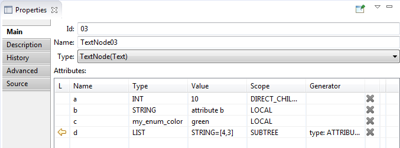
- Вкладка Description содержит следующие параметры текстового узла:
- Description –
текст текстового узла. Заполняется вручную.
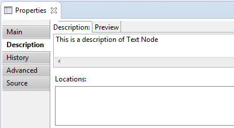
- Вкладка History содержит информацию об истории всех ревизий, касающихся этого текстового узла.
Содержимое вкладки аналогично содержимому вкладки 'History' у требования (см. Параметры требования).
- Вкладка Advanced содержит следующие параметры текстового узла:
- Predicate – предикат, условие
отбора текстовых узлов для отчетов. По
умолчанию наследуется от родительских
узлов. Заполняется вручную.
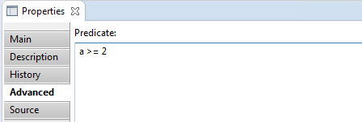
- Вкладка Source содержит только json-код:
- json – низкоуровневое
представление текстового узла как
сущности. Не редактируется.
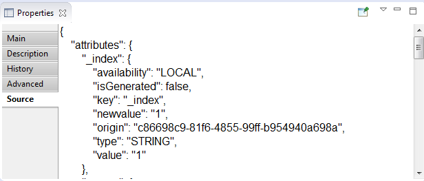
- Параметры тестовой ситуации
– свойства тестовой ситуации, которые указываются в окне 'Properties'. (Также могут быть в сокращенном виде
просмотрены и отредактированы в 'окне редактирования параметров'.)
Для тестовых ситуаций окно 'Properties' содержит 5 вкладок:
- Вкладка Main:
- Id – идентификатор тестовой
ситуации. Идентификатор уникален
среди тестовых ситуаций одного
требования. Может быть изменен
вручную.
- Name – имя тестовой ситуации. Может
не быть уникальным. По умолчанию пусто. Может быть изменено
вручную.
- Status - статус тестовой ситуации,
может иметь одно из трех значений: 'in
process', 'complete' или 'verified'.
Изменяется вручную.
- Author - автор тестовой ситуации,
изменяется вручную.
- Attributes – атрибуты
тестовой ситуации, представлены в таблице.
Подробнее о таблице атрибутов здесь.
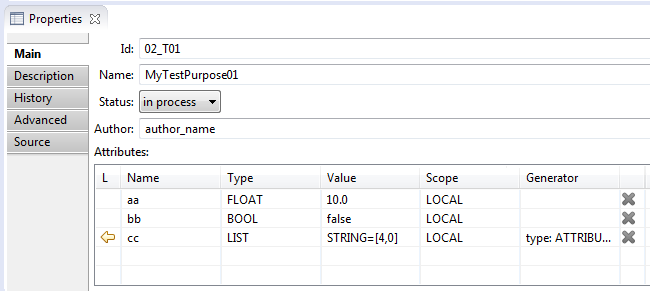
- Вкладка Description:
- Test purpose description - описание теста,
изменяется вручную.
- Expected results - ожидаемый после
выполнения теста результат.
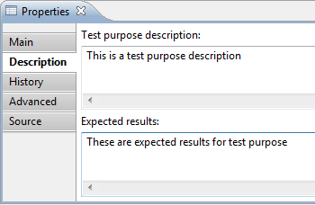
- Вкладка History содержит информацию об истории всех ревизий, касающихся этой тестовой ситуации. Содержимое вкладки аналогично содержимому вкладки 'History' у требования
(см. Параметры требования).
- Вкладка Advanced содержит:
- Predicate – предикат, условие
отбора тестовых ситуаций для отчетов.
По умолчанию наследуется от
родительских требований. Заполняется
вручную.
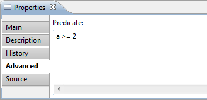
- Вкладка Source:
- json – низкоуровневое
представление тестовой ситуации как
сущности. Не редактируется.
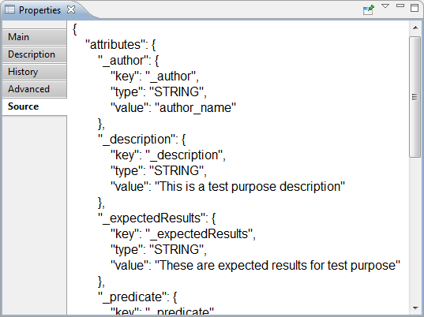
- Параметры требования
– свойства требования, которые устанавливаются в окне 'Properties'. (Также могут быть в сокращенном виде
просмотрены и отредактированы в 'окне редактирования параметров'.)
Для требований окно 'Properties' содержит 5 вкладок:
- Вкладка Main содержит следующие параметры требования:
- Id – идентификатор
требования. Идентификатор уникален
среди дочерних узлов одного родителя. Может
быть изменен вручную.
- Name – имя требования. Может
не быть уникальным. По умолчанию пусто. Может быть изменено
вручную.
- Type – тип узла. Для требования - всегда 'Requirement'.
Это поле представляет собой выпадающий список и предназначено для смены типа узла на текстовый ('Text' или 'Header').
- Attributes – атрибуты
требования, представлены в таблице. Подробнее о таблице атрибутов здесь.
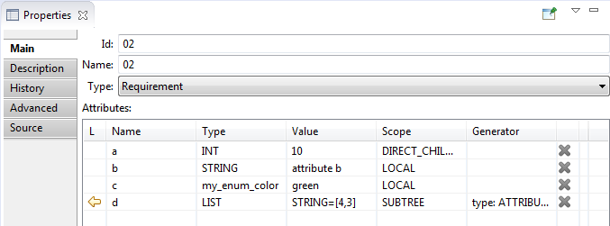
- Вкладка Description содержит следующие параметры требования:
- Alternative Description –
альтернативный текст требования,
уточняет и дополняет текст выделенных
фрагментов. Заполняется вручную.
- Locations - список выделенных
фрагментов данного требования,
сгруппированный по документам.
Вручную можно только удалять фрагменты.
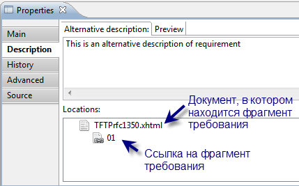
- Вкладка History содержит информацию об истории всех ревизий, касающихся этого требования.
Пользователь не может редактировать что-либо на этой вкладке напрямую, только при сохранении в репозиторий очередной версии.
Вкладка содержит следующую информацию:
- Таблица истории версий — это таблица, содержащая информацию о всех версиях данного требования.
Каждой версии соответствует одна строка, в ней указан текст комментария к этой версии, системный номер версии,
имя загрузившего версию в репозиторий пользователя и дата ее загрузки в репозиторий.
Самая верхняя строка соответствует последней синхронизированной с репозиторием версии. Далее сверху вниз идут версии в порядке по убыванию,
от более свежих к более старым. При двойном клике по строке определенной версии можно открыть окно сравнения, в котором будет отображена информация
о различиях между этой версией рассматриваемого требования и его текущей локальной версией. Локальная версия, находящаяся на текущий момент в workspace,
помечена зеленым цветом. Это особенно актуально видеть в том случае, если проект был переключен на старую версию.
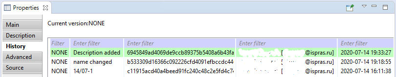
- Вкладка Advanced содержит:
- Predicate – предикат, условие
отбора требований для отчетов. По
умолчанию наследуется от родительских
требований. Заполняется вручную.
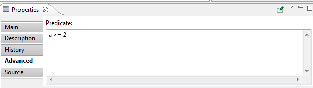
- Вкладка Source содержит только json-код:
- json – низкоуровневое
представление требования как
сущности. Не редактируется.
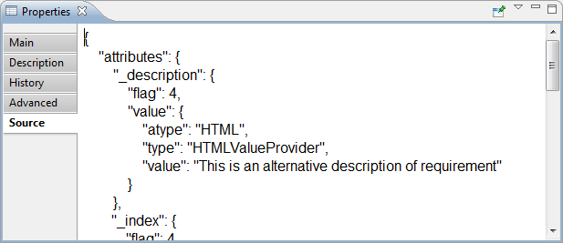
- Параметры узла
– это свойства узла, набор атрибутов, которые характеризуют узел. Полный перечень параметров узла можно посмотреть и отредактировать в окне-представлении
'Properties' перспективы Requality. Сокращенный перечень параметров находится в специальном 'окне редактирования параметров',
которое открывается при создании и редактировании узлов в редакторах 'Module Editor', 'UniEditor' и 'Review'. Некоторые атрибуты могут быть 'обязательными', они настраиваются в настройках проекта Requality. Атрибуты, которые указаны в таблице атрибутов, являются пользовательскими, т.к. их наличие определяется пользователем, в отличие от всех остальных — системных — атрибутов.
- Параметры шаблона узла
– свойства шаблона узла (см. Шаблон узла). Параметры шаблона узла определенного типа полностью аналогичны параметрам узла этого типа.
Устанавливаются в окне 'Properties'.
(Также могут быть в сокращенном виде просмотрены и отредактированы в 'окне редактирования параметров'.)
- Переиспользуемый (переиспользованный) узел
- любой узел дерева требований, указанный в качестве целевого узла для итерации в параметрах виртуального узла (см. 'Target' в разделе Параметры виртуального узла).
На основе этого узла создаются узлы-клоны (см. Клон) данного виртуального узла. На сам переиспользованный узел это никак не влияет. Изменения в переиспользуемом узле и его поддереве узлов влияют на узлы-клоны.
- Перечисляемый тип атрибута (Enum)
– это тип атрибута, определяющий список допустимых значений атрибута. Перечисляемый тип - 'Enum' - в Requality
определяется пользователем в окне параметров проекта (см. Параметры проекта Requality) как обычный атрибут узла проекта:
- Имя этого атрибута будет считаться названием 'Enum'-типа.
- В качестве типа этого атрибута должен быть выбран тип 'ENUM_DEFINITION'.
- В качестве значения атрибута указывается список значений. Его можно задать вручную с помощью специального
редактора или воспользоваться дополнительной возможностью извлечения из уже существующих атрибутов всех узлов проекта:
- Редактор открывается при клике в столбце 'Value'. В окне редактора перечислены все допустимые
значения типа и комментарии к ним (если есть). Окно редактора значений для задания перечисляемого типа выглядит так:
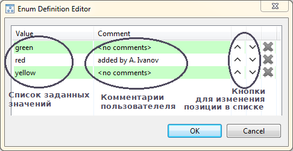
- Процедура извлечения 'Enum'-типа из узлов проекта запускается с помощью кнопки 'Extract enum definition from attributes'
в окне 'Properties' проекта. Где пользователь может выбрать один из атрибутов, использующихся в дереве узлов проекта.
Там же пользователю предлагается ввести имя для нового типа (по умолчанию оно будет совпадать с названием выбранного атрибута).
После завершения процедуры все значения атрибута с таким именем станут списком значений перечисляемого типа.
А атрибуты, по которым был задан 'Enum'-тип, получат в качестве типа название этого нового созданного перечисляемого типа, сохранив свои значения.
- Сам по себе атрибут 'ENUM_DEFINITION' не виден (не наследуется) в качестве атрибута в других узлах проекта.
Но заданный им 'Enum'-тип отображается в списке доступных типов для всех атрибутов в узлах дерева проекта (во избежание путаницы он отображается с префиксом Ⓔ).
- Подтребование, дочернее требование (sub-requirement, child-node)
– это требование, являющееся дочерним узлом другого 'требования' в иерархии проекта. Если родительское требование R содержит N подтребований RC_1, ..., RC_N, то считается, что
требования RC_1, ..., RC_N представляют собой декомпозицию требования R. Другими словами, целевая система удовлетворяет требованию R тогда и только тогда, когда она удовлетворяет
всем требованиям RC_1, ..., RC_N.
- Полный путь к узлу (FullName)
– путь к узлу, идентифицирующий этот узел. Содержит перечисление всех родительских узлов по порядку, начиная от корневого узла 'Requirements' и
заканчивая самим рассматриваемым узлом. В этом перечислении узлы указываются по их именам, в случае отсутствия имени — по идентификаторам. В качестве разделителя используется '/'.
- Пользовательские атрибуты
– это параметры узла, которые настраиваются пользователем (в отличие от системных атрибутов): пользователь может создавать их, удалять, указывать для них тип данных. Пользовательские атрибуты задаются в таблице атрибутов
(см. Таблица атрибутов). Следует различать 'пользовательские атрибуты' и 'системные атрибуты'
(см. Системные атрибуты), а так же иметь в виду, что 'пользовательские атрибуты' могут стать 'обязательными атрибутами'
(см. Обязательные атрибуты).
- Проект Requality (Requality project)
– проект Eclipse, созданный
с помощью плагина Requality. Cодержит документы,
отчеты, требования и другие элементы.
- Таблица атрибутов (атрибуты)
– это набор параметров - атрибутов - узла проекта Requality, которые характеризуют различные свойства этого узла.
- Атрибуты перечислены в окне 'Properties'.
- Каждый атрибут имеет имя, тип, значение, область действия.
- Также для атрибута опционально может быть указан генератор значений.
- Атрибуты могут быть заданы вручную или сгенерированы автоматически с помощью генератора, параметры которого задаются пользователем.
- Атрибуты могут быть унаследованы от родительского узла, в таком случае они помечаются символом-стрелкой.
- Атрибуты применяются в предикатах, в описаниях узлов, а также при переиспользовании и итерации узлов.
- Некоторые атрибуты задаются автоматически, например, дата генерации отчета.
- Некоторые атрибуты должны иметь строго определенные имена, такие атрибуты обычно создаются с помощью вспомогательных диалоговых окон
(например, атрибут 'coverageFilePath' у узла настроек отчета, который задает путь к файлу с информацией о покрытии).
- Для разных типов узла атрибуты могут различаться.
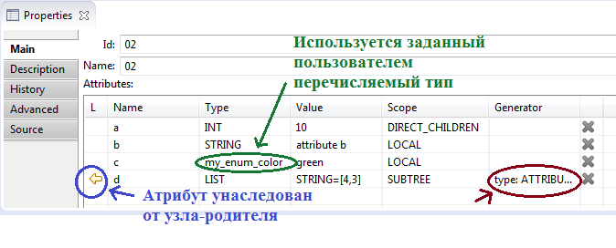
Атрибуты представлены в виде таблицы с полями 'Name' (имя атрибута), 'Type' (тип), 'Value' (значение),
'Scope' (область видимости) и 'Generator' ('генератор значений атрибута').
- Термин, связь между термином и использованием термина
– это понятие в Requality, обозначающее наличие особой направленной связи 'Terms - Term referrers'
типа 'один-ко-многим' между несколькими узлами, причем один из этих узлов считается местом определения термина,
а все остальные - это места, где он используется. Эта связь задается не с помощью атрибута типа 'Reference',
а с помощью специальных атрибутов с именами 'def-term' (в узле, где термин определен) и 'usedef'
(в узлах, где термин используется). Имя термина уникально в рамках проекта.
- Тестовая ситуация (Test purpose)
– это некоторая сущность, содержащая описание тестового случая и ожидаемый результат. Принадлежит требованию, не имеющему требований-потомков. Тестовая ситуация обладает набором параметров, задающих ее содержимое и свойства. Для одного требования может быть задано несколько тестовых ситуаций.
- Текстовый узел (Text Node)
– это сущность, содержащая некоторый текст. Предназначена для хранения и отображения примечаний и комментариев, входящих в состав документации.
Такой текст может являться частью документации, не будучи при этом требованием.
- Текстовый узел аналогичен требованию ('Requirement'), но им не является и в отчетах о покрытии требований или о покрытии требованиями не учитывается.
- Текстовый узел обладает набором параметров, которые задают его содержимое и свойства
(см. Параметры текстового узла).
- Текстовый узел может иметь два формата: обычный текст ('text') и текст-заголовок ('header').
Формат текстового узла влияет на его отображение в редакторах 'UniEditor' и 'Module Editor'.
- Текстовый узел может быть преобразован в требование ('Requirement') с сохранением всех параметров.
- Требование (Requirement)
– это сущность,содержащая описание некоторого требования и ссылающаяся на те фрагменты документа, которые соответствуют этому требованию.
- Требование может иметь 'подтребования (дочерние требования)'.
- Требование может не иметь описания и не ссылаться на документ, такие требования обычно используются для организации иерархической структуры требований, выступая в роли узлов-родителей.
- Только требования, не имеющие в иерархии дочерних требований, могут иметь тестовые ситуации.
- Требования обладают набором параметров, которые задают его содержимое и свойства (см. Параметры требования).
- Требование может быть преобразовано в текстовый узел ('Text Node') с сохранением всех параметров.